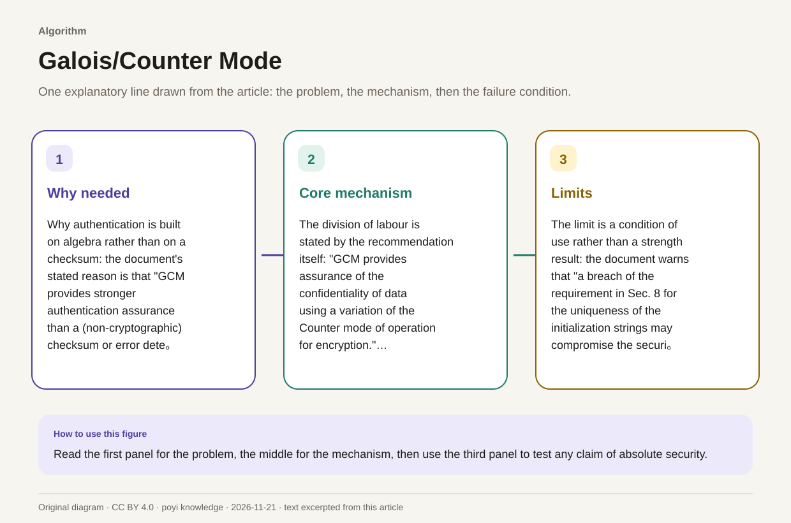
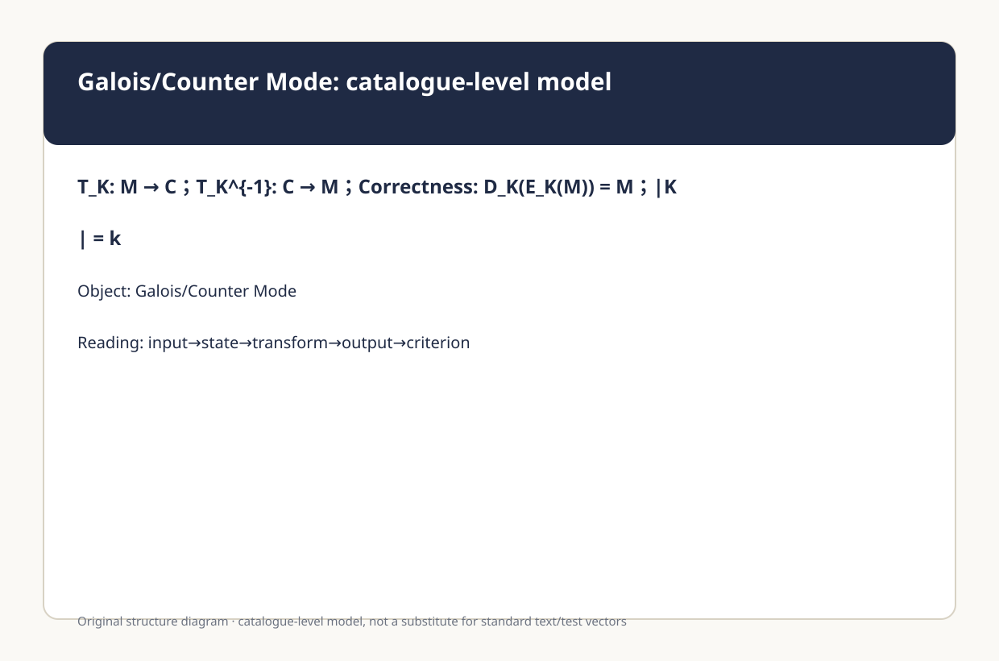

Principles
Algorithm: Galois/Counter Mode (GCM 伽罗瓦计数器模式). The division of labour is stated by the recommendation itself: "GCM provides assurance of the confidentiality of data using a variation of the Counter mode of operation for encryption." Confidentiality comes from a variation of counter mode, and the sentence that follows hands authenticity to a universal hash function over a binary Galois field - finite, in the document's parenthesis. Its parenthesis caps that authenticity assurance at about 64 gigabytes of confidential data per invocation - the limit sits on the authenticity of the encrypted part, and the same section says separately that additional data needing no encryption may be "of practically unlimited length per invocation". This entry stays inside what that document says: it does not reproduce the multiplication that defines GHASH, and it does not treat the key schedule as part of GCM.

Why it matters
Why authentication is built on algebra rather than on a checksum: the document's stated reason is that "GCM provides stronger authentication assurance than a (non-cryptographic) checksum or error detecting code", and it splits the point into two cases - accidental modification and deliberate modification. The same passage adds that an input confined to material needing no confidentiality turns the mode into what the document calls GMAC, which is then nothing more than an authentication mode over that input. What is bought here is therefore resistance to forgery under a key, not a faster checksum.
Applications
The position comes from the document's own words: "Thus, GCM is a mode of operation of the AES algorithm." It is a mode of AES rather than a stand-alone cipher, and the same section states that everything said about GCM also applies to GMAC, so claims about the mode cover the authentication-only specialization as well. Its standing is equally checkable: Section 2 prints "This Recommendation has been prepared for use by federal agencies.", and the next sentence adds that nongovernmental organizations may use it voluntarily - the first is what the government application label rests on, the second is not evidence of any industry use. The infrastructure label has only editorial support. None of the protocol names this KB's application vocabulary might have been labelled from occurs - IPsec, TLS and 802.11 each grep to zero - but the document does name protocols elsewhere: its two concrete examples are the network-protocol AAD fields in Sec. 5.2.1.1 and, in Appendix C, "Secure Real-time Transport Protocol carrying Voice over Internet Protocol, running over User Datagram Protocol". A draft of this entry said no protocol name occurs anywhere; that was refuted by line 1439 and is corrected here.

Limits & attacks
The limit is a condition of use rather than a strength result: the document warns that "a breach of the requirement in Sec. 8 for the uniqueness of the initialization strings may compromise the security assurance almost entirely", and it concludes that the mode stays undeployed where that uniqueness cannot be ensured. Sec. 5.2.1.1 describes the IV as essentially a nonce - unique inside the context that the document specifies. Sec. 8.3 caps how many times one key may be used at all, and the cap is conditional: it applies to every implementation using either "the deterministic construction with IVs whose length is not 96" or the RBG-based construction, and it is waived only where 96-bit IVs from the deterministic construction are the sole case. This copy prints that global ceiling as 232 where the publication sets a superscript, i.e. two to the thirty-second, and the same subsection then splits it into per-device limits through an example fleet of 210 units, likewise printed without its exponent. Every one of those digits is damaged in this extraction, so this entry states the shape of the constraint and does not quote the numbers.
History
The names come from this file itself: "The designers of GCM are McGrew and Viega." The same sentence logs the NIST submission as Ref. [6] and the security-and-performance discussion as Ref. [7], and its bibliography dates those two: [6] is "The Galois/Counter Mode of Operation (GCM)", May 31, 2005, and [7] is "The Security and Performance of the Galois/Counter Mode (GCM) of Operation", INDOCRYPT '04, 2004. Neither is the 《GCM and GMAC》(2007) record the row inherited, and no copy of either paper is retained here, so what is verifiable is this recommendation's own report of it - the acknowledgements separately print "David McGrew, who co-invented GCM and submitted it to NIST". Three printed dates carry the dating: the title page on line 2 sets "November, 2007" with a comma, line 23 sets November 2007 on the title page and line 51 is the running imprint, which also gives the 37-page extent. So the row's era moves from e14-standardization, whose era.md prints a 1977-2001 window that excludes 2007, to e15-web-protocols, which prints 1991-2010. No document retained here gives the year McGrew and Viega proposed the mode, so none is added.
Worked example & verification
Formal model and reproduction steps
[C=E_K(P;r),\qquad P=D_K(C)]
Galois/Counter Mode: the registered public parameters, key material or randomness, and message are mapped through the stated transformation to an output checked against the registered criterion. The worked example is a structural reproduction, not a new test vector; parameter ranges, standard versions and implementation details remain source-bound.
References
- Wikipedia search entry for GCM 伽罗瓦计数器模式. https://zh.wikipedia.org/w/index.php?search=GCM%20%E4%BC%BD%E7%BD%97%E7%93%A6%E8%AE%A1%E6%95%B0%E5%99%A8%E6%A8%A1%E5%BC%8F
- Handbook of Applied Cryptography (Menezes, van Oorschot, Vanstone). https://www.cacr.math.uwaterloo.ca/hac/